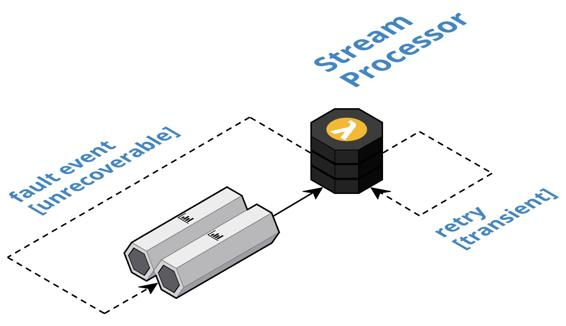

Stream Circuit Breaker
Control the flow of events in stream processors so that failures do not inappropriately disrupt throughput by delegating the handling of unrecoverable errors through fault events.
